年度活動策劃
以賽事、市集與徵集，持續激活兩岸四地的創意能量。
深港澳青少年創意設計大賽
- 以「交流交融、創想未來」為主題，面向年齡不超過 19 周歲的深港澳青少年。
- 徵集作品包括科技新發明、創意新媒體、設計新視角、科普新世界四個類別。
- 引發中央電視台持續關注，已連續四屆獲得相關報導。
中華民族文創主題活動
- 澳門心中國夢音樂徵集
- 中華民族文創產品設計大賽
- 非遺創新精品展
- 非遺跨界時尚秀
趣至夏日原創市集 · 深澳雙創周
- 原創市集聯動青年創作者，讓文創走近大眾消費。
- 深澳雙創周促進澳門與深圳兩地文創人士同台展示。
澳門 · 國際網絡視聽節
- 協會年度盛事，詳見「國際網絡視聽節」專頁。
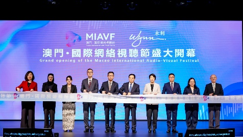
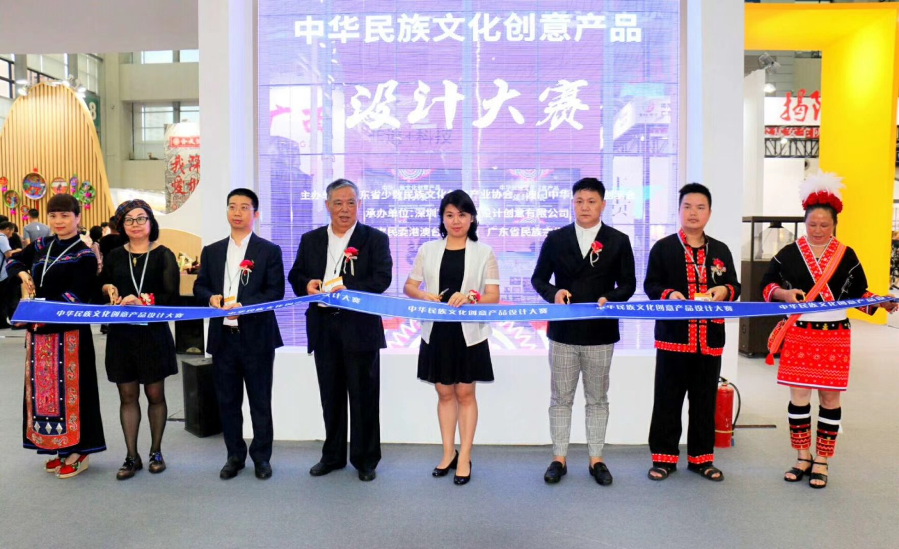
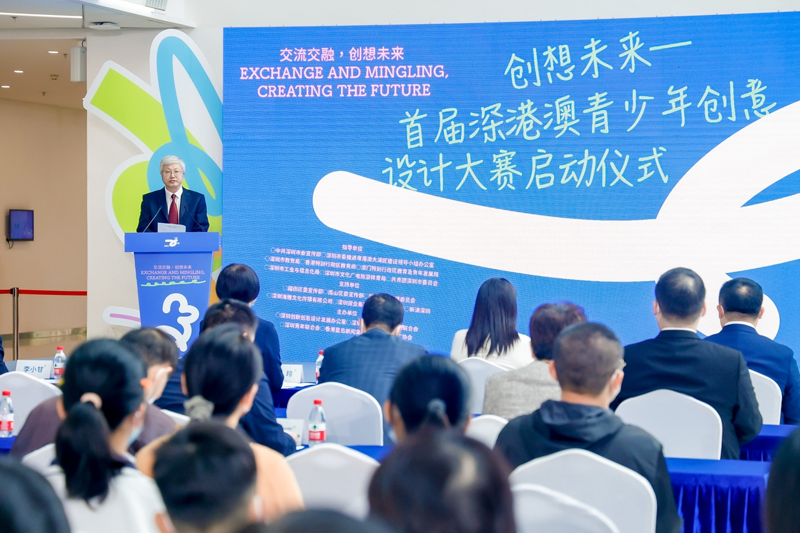
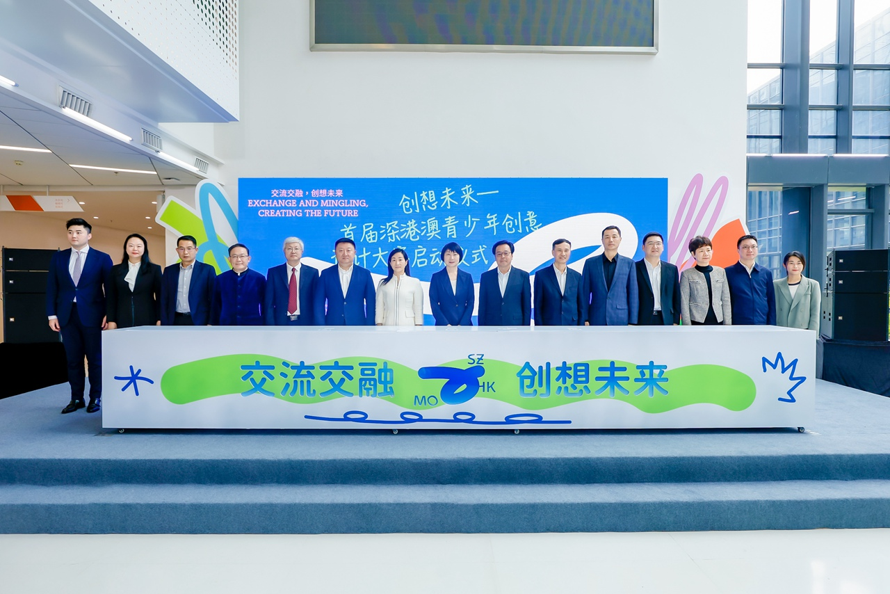
文創平台
線下實體店，讓 IP 衍生品走進真實消費場景。
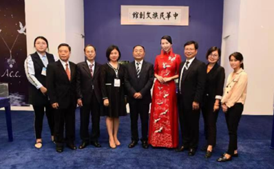
中華民族文創館
澳門與少數民族文創展示與交易基地，由國家民委原副主任江家福親筆題寫。以中華文化為主流、多元文化共存為起點，向世界傳播中華民族文化，產品涵蓋民族首飾、民族文創、民族工藝、傳統服飾、佛教文創、澳門原創。
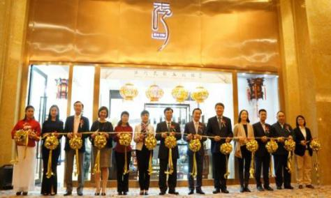
ACC 創意廊
ACC（Amazing Creation & Collection）匯聚澳門地道文化、中西交融、經典創新的藝術創作、交流、展示和交易空間，彙集澳門本土攝影、視頻、畫作、手工藝品等原創作品，已與數十位澳門本土文創品牌合作。
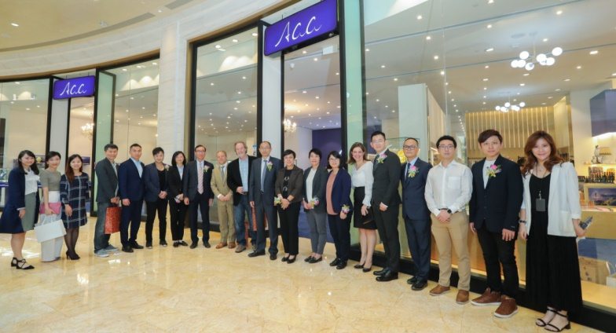
Depanda（國潮文化）
以熊貓（Panda）這一高辨識度、具天然「明星效應」的文化符號為核心記憶點，打造國潮品牌集合店，透過潮酷創意表達與精準傳播，持續吸引年輕消費者，構建鮮明的 IP 場景記憶點。
核心活動 → 內容品牌化 → 價值閉環
以商養善、以善促創，形成可持續的循環。
平台的盈利並非終點：剩餘利潤將反哺大賽與公益，讓「內容品牌化」真正轉化為社會價值，構成協會運作的良性閉環。
公益行動
以文化為紐帶，持續推動民族地區青少年藝術教育與扶貧幫扶。
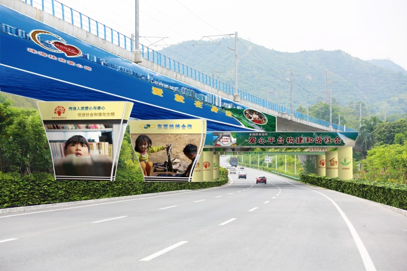
「彩虹路」捐建 91 所教室
該活動由中央廣播電視總台民族節目中心於 2013 年 5 月倡議發起，協會作為專案共同發起單位，通過組織內地及港、澳、台藝術家赴民族地區開展采風、創作與教學等系列活動，定向資助民族地區中小學藝術教育。
截至目前，「彩虹路」項目已在民族地區中小學校捐建美術、音樂教室共 91 所，並在 8 所學校發放藝術包 755 個，取得良好的社會效益和教育成效。
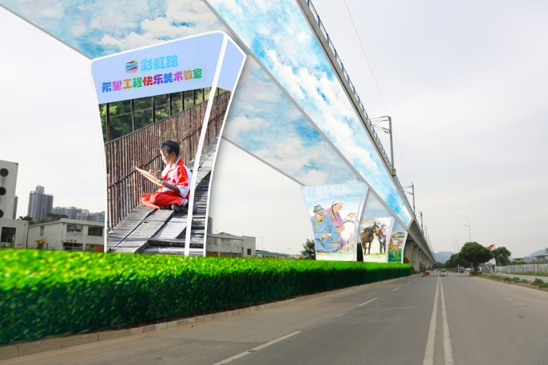
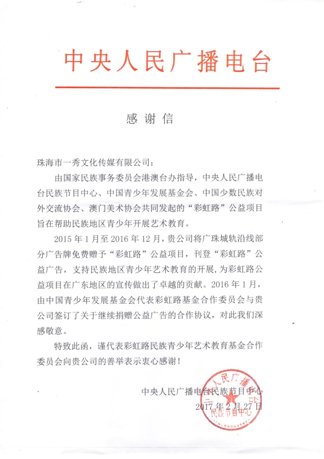
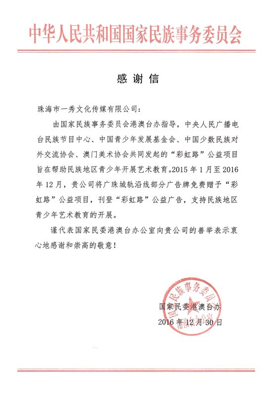
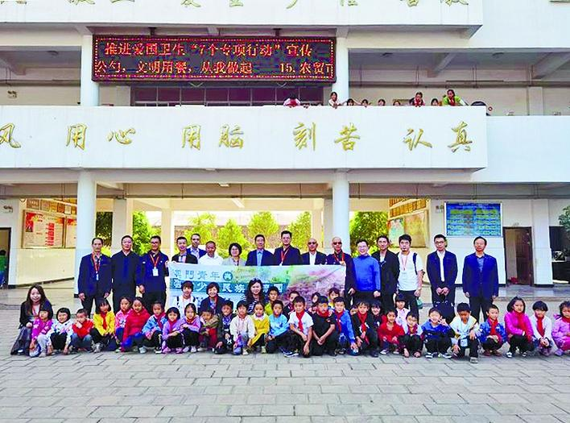
貴州與雲南的教育幫扶
自 2019 年 12 月前往貴州從江頂洞小學進行幫扶工作，並簽署長遠幫扶協定後，多次聯動企業資源向全校學生捐贈冬季校服、鞋子等物資。
2020 年 10 月赴雲南考察，參訪團與祿勸彝族苗族自治縣領導在崇德小學留影，並與縣教體局簽訂教育幫扶合作框架協議。
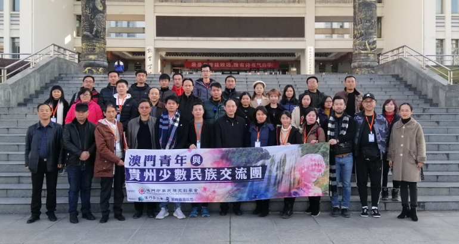
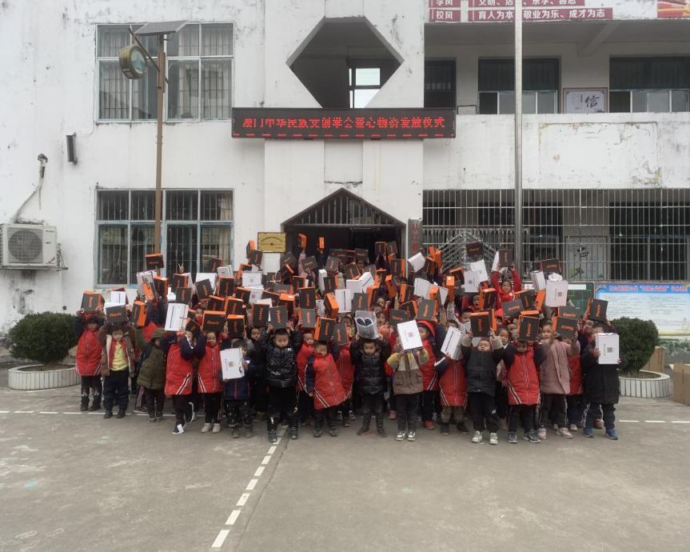
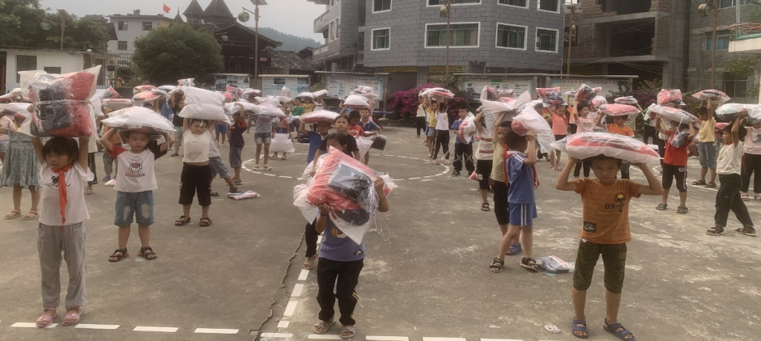
交流活動
走出澳門，連接國際與國內的民族地區、灣區城市與青年群體。
國際交流（概要）
赴匈牙利參加中國品牌商品展
- 推廣中華文化與文創品牌。
赴伊朗參加 2017 中國（伊朗）貿易博覽會
- 拓展中東市場連接。
拜訪俄羅斯亞洲工業企業家聯盟
- 推動文化與產業交流。
赴哈薩克斯坦拜訪傳媒與創意產業平台
- 對接當地核心傳媒機構與創意產業平台。
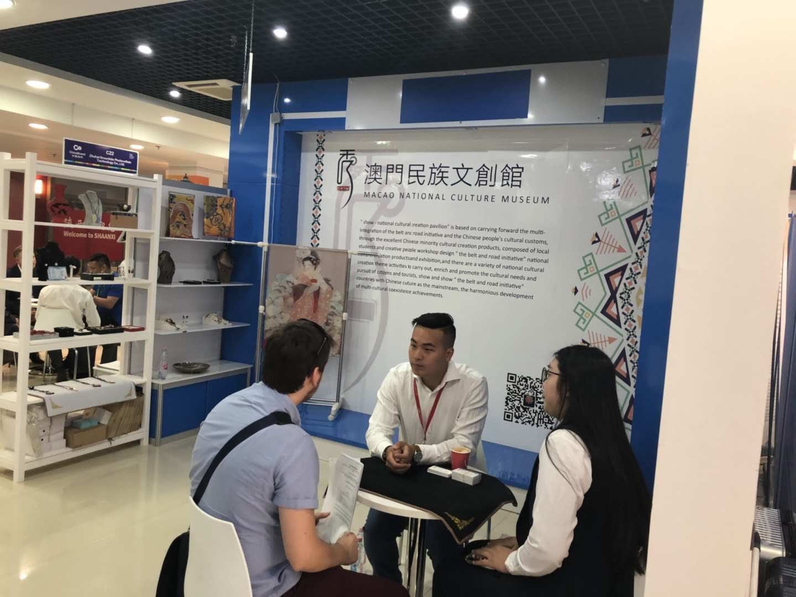
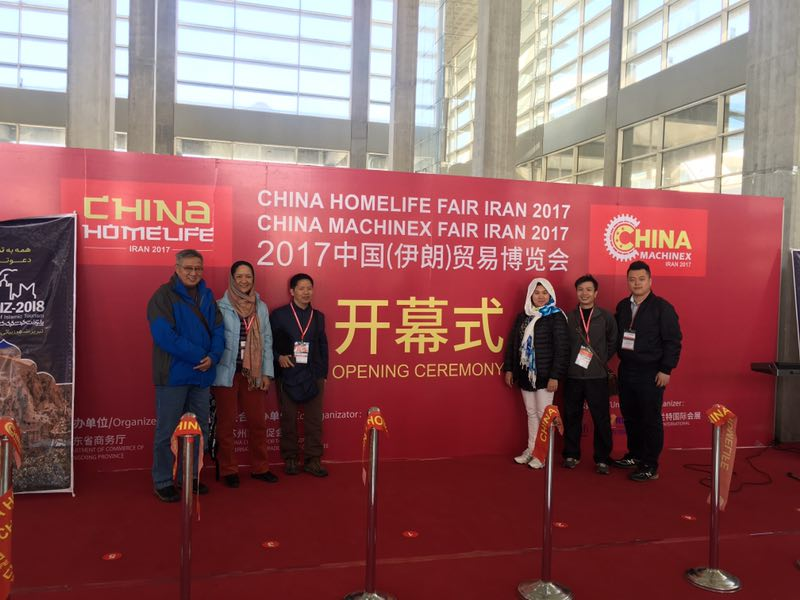
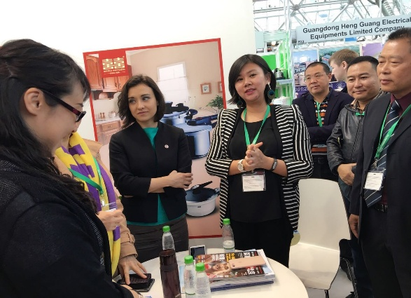
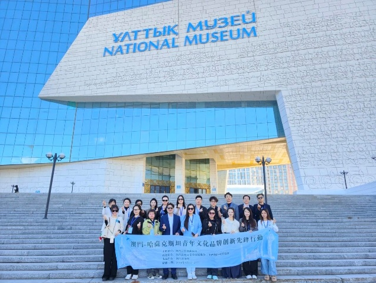
國內交流活動
| # | 日期 | 活動 |
|---|---|---|
| 1 | 2017.07 | 赴內蒙古參加「中華一家親」海峽兩岸各民族歡度那達慕 |
| 2 | 2017.08 | 赴雲南參加「中華一家親·涼都情似火」海峽兩岸各民族歡度彝族火把節 |
| 3 | 2017.12.16–17 | 赴中南民族大學參加全國民族院校藥學院發展戰略研討暨院長聯席會議 |
| 4 | 2018.08 | 赴雲南參加中華民族一家親之雲南石林火把節 |
| 5 | 2019.03.03–04 | 赴海南考察交流 |
| 6 | 2020.09.21–22 | 中葡青年深圳交流團 |
| 7 | 2020.10.25–27 | 澳閩青年影視產業交流行 |
| 8 | 2020.11.01–03 | 深圳文創參觀學習之旅 |
| 9 | 2020.12.16–20 | 澳浙創新創業交流團 |
| 10 | 2021.04.26–30 | 中葡安徽文創產業交流行 |
| 11 | 2022.08.30–09.03 | 北京青年影視文化學習交流行 |
| 12 | 2022.09.13–17 | 江蘇青年影視文化學習交流行 |
| 13 | 2022.10.30–11.03 | 四川青年影視文創學習交流行 |
| 14 | 2023.05.17–19 | 大灣區青年文化交流團 |
| 15 | 2023.05.23–27 | 江西青年影視文創學習交流行 |
| 16 | 2023.09.12–17 | 澳新少數民族交流團 |
| 17 | 2023.10.24–28 | 浙江青年影視文創學習交流行 |
| 18 | 2023.11.13–17 | 第二屆北京青年影視文創學習交流行 |
| 19 | 2024.10.21–25 | 澳門—上海青年影視文創交流行 |
| 20 | 2024.11.03–07 | 第三屆北京青年影視文創學習交流行 |
| 21 | 2024.11.26–30 | 澳門—福建青年影視文創學習交流行 |
| 22 | 2025.03.26–30 | 澳門—四川文化交流行 |
| 23 | 2025.10.13–17 | 澳門—湖南青年文化交流行 |
| 24 | 2025.10.28–11.01 | 澳門—浙江青年影視文創學習交流行 |
| 25 | 2025.11.11–15 | 皖澳青年文化學習考察團 |
| 26 | 2026.04.13–17 | 澳門—四川青年影視文創交流團 |
| 27 | 2026.09.07–11 | 澳門—西藏民族文化交流團 |
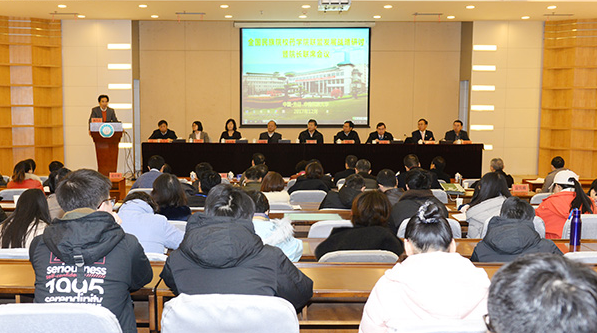
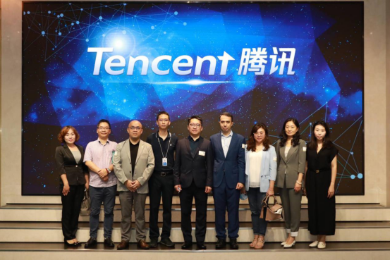
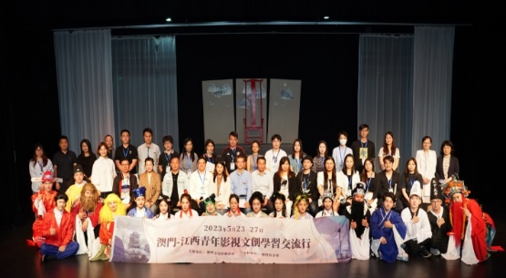
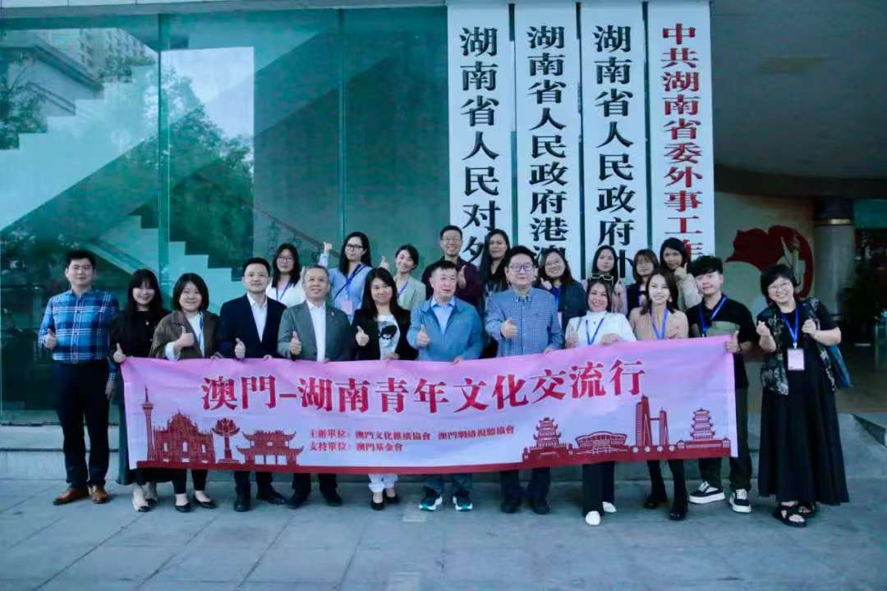
權威報導與社群矩陣
從央媒到海外媒體，從短視頻到社交平台，構建多維傳播網絡。
本協會專站現嵌於 翁振軒 Sean Own 個人網站 之下。翁振軒於本協會擔任 副理事長 及 電子商務專委會主任。
前往翁振軒個人頁 ↗